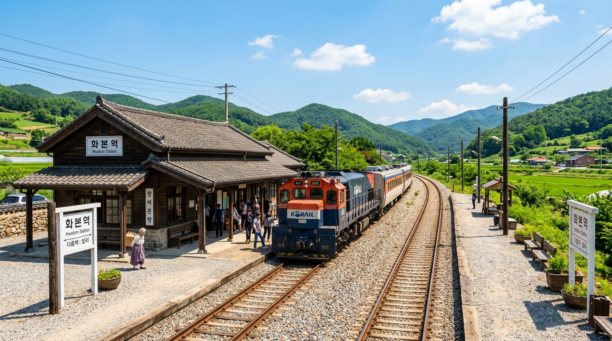
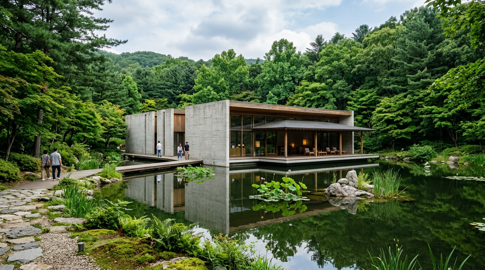
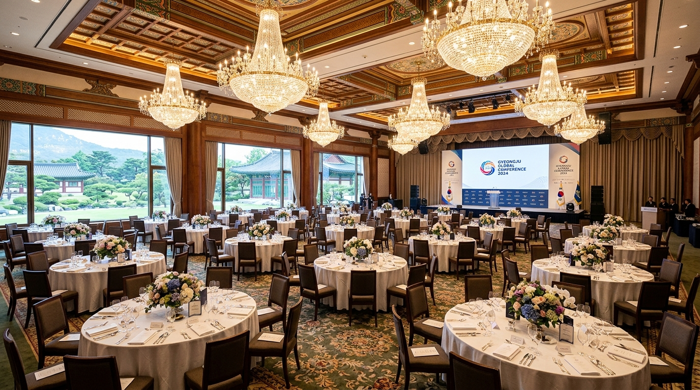
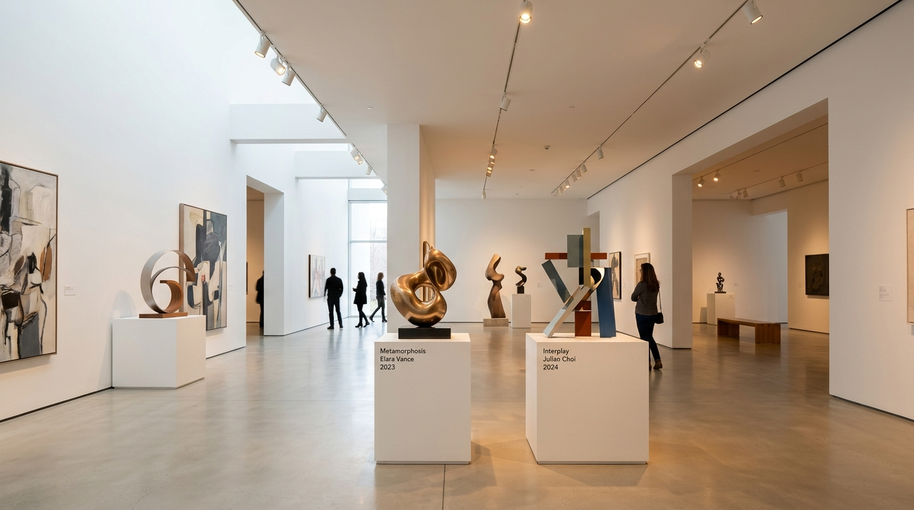
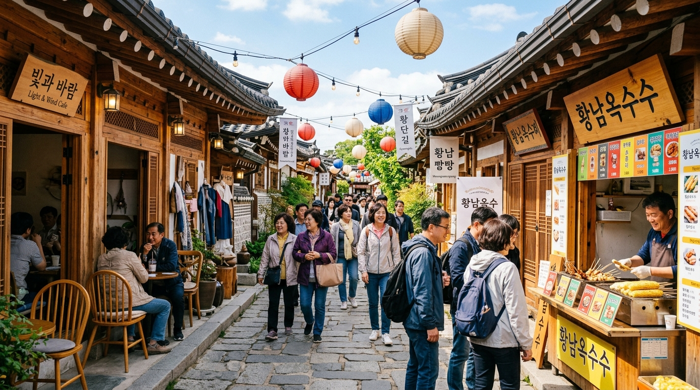

과정소개
본 프로그램의 주요 목적, 개요 및 일자별 전체 시간표를 안내해 드립니다.
1. 과정소개
프로그램 목적 및 개요
이번 프로그램은 참가자 간의 우호 증진과 지역 문화유산 탐방을 목표로 기획되었습니다.
역사와 예술이 숨 쉬는 명소를 방문하며 다채로운 문화 경험과 힐링의 시간을 제공합니다.
- 행사 기간: 2026년 9월 14일 ~ 9월 16일 (2박 3일)
- 참가 대상: 전체 프로그램 등록 참가자
- 주요 방문지: 화본역, 사유원, 경주 힐튼 호텔, 오아르 미술관, 황리단길
2. 시간표
| 시간 | 일정 내용 | 장소 | 비고 |
|---|---|---|---|
| 09:00 - 10:30 | 개회식 및 오리엔테이션 | 경주 힐튼 호텔 대연회장 | 서류 등록 및 안내책자 수령 |
| 10:30 - 12:30 | 화본역 & 엄마아빠옛날옛적에 관람 | 군위 화본역 일대 | 단체 이동 (전용 버스) |
| 12:30 - 14:00 | 사유원 오찬 및 산책 탐방 | 사유원 수목원 | 자연 힐링 투어 |
| 14:30 - 16:30 | 오아르 미술관 특별 도슨트 관람 | 오아르 미술관 | 전시 및 체험 활동 |
| 17:00 - 19:00 | 황리단길 자유 투어 & 석식 | 황리단길 자유구역 | 개별 미션 및 자유식 |
화본역
네티즌이 뽑은 가장 아름다운 간이역, 화본역과 옛 추억을 회상하는 체험 공간을 소개합니다.
1. 화본역
역사와 추억이 서린 레트로 간이역
화본역은 1930년대 목조 건물 양식을 그대로 간직하고 있는 보기 드문 간이역입니다.
급수탑과 아담한 역사 배경으로 인스탁스 레트로 포토존이 형성되어 있습니다.

화본역 전경 및 급수탑 포토존2. 엄마아빠옛날옛적에
7080 추억의 교실 및 골목길 체험
폐교된 산성중학교를 활용하여 1960~70년대 시골 학교와 골목길을 재현한 추억의 테마박물관입니다.
옛날 교복 체험, 이발소, 문방구, 난로 위의 추억의 도시락 등을 만나보실 수 있습니다.
- 관람 시간: 09:00 ~ 18:00
- 체험 항목: 옛날 교복 입기, 달고나 만들기, 난로 도시락
사유원
자연과 세계적인 건축가들의 작품이 조화를 이루는 고품격 사색과 힐링의 수목원입니다.
1. 사유원 안내
깊은 사색과 삼림욕을 선사하는 예술 수목원
사유원(思惟園)은 나무와 돌, 그리고 승효상 등 세계적인 건축가들이 조성한 명상과 예술의 공간입니다.
오랜 세월을 견뎌낸 모과나무 정원과 계곡, 사색의 길을 천천히 거닐며 마음의 휴식을 얻을 수 있습니다.
- 추천 코스: 현암 → 풍설기천년 → 사담 → 오대
- 복장 안내: 편안한 운동화 및 산책용 복장 권장

사유원 건축과 자연 융합 관람로경주 힐튼 호텔
숙박 및 최고급 만찬 연회장이 준비되어 있는 메인 숙소 시설 정보를 확인하세요.
1. 만찬장 안내
공식 환영 만찬 및 네트워크 만찬
경주 힐튼 호텔 대연회장(Grand Ballroom)에서 최고급 코스 요리와 함께 공식 환영 만찬이 개최됩니다.
지정된 좌석 배치표를 확인하시고 정시에 입장해 주시기 바랍니다.
- 만찬 시간: 18:30 ~ 20:30
- 좌석 배치: 각 조별/그룹별 지정 좌석제

경주 힐튼 호텔 그랜드 볼룸 만찬장2. 시설 이용 안내
투숙객 전용 부대시설 및 혜택
프로그램 참가자분들은 카드키 제시 시 수영장, 피트니스 센터, 라운지를 자유롭게 이용하실 수 있습니다.
- 무료 Wi-Fi: Hilton_Guest (객실 번호 입력)
- 실내/외 수영장: 06:00 ~ 21:00 (1층)
- 조식 뷔페: 06:30 ~ 10:00 (1층 레이크사이드)
오아르 미술관
현대 미술 작가들의 창의적인 작품 감상과 함께하는 맞춤형 문화 활동 프로그램입니다.
1. 활동 안내
나만의 아트 굿즈 만들기 클래스
전문 아티스트와 함께 실크스크린 프린팅 및 아크릴 페인팅을 통해 나만의 기념 작품을 직접 제작하는 체험 클래스입니다.
- 소요 시간: 약 60분 진행
- 준비물: 미술관 내 모든 재료 무료 제공

미술관 워크숍 체험 공간2. 전시 안내
기획전: [빛과 공간의 현대 미술]
국내외 저명 현대 작가 10인이 참여한 빛과 조형물의 인터랙티브 미디어 아트 특별 전시입니다.
- 도슨트 설명: 15:00 정시 전문 큐레이터 해설
- 촬영 안내: 플래시 없는 사진 촬영 가능
황리단길 자유투어
한옥의 고풍스러운 멋과 트렌디한 매장이 어우러진 경주 대표 황리단길을 자유롭게 즐겨보세요.
1. 먹거리
황리단길 대표 명물 디저트 & 맛집 추천
십원빵, 황남옥수수, 한옥 카페의 정갈한 다과 등 황리단길에서만 맛볼 수 있는 미식 탐방 정보입니다.

황리단길 한옥 카페 및 카페 거리2. 놀거리
소품샵, 포토부스 및 운세 뽑기
경주의 감성이 담긴 아기자기한 소품샵 투어와 한옥 배경 셀프 포토 스튜디오를 체험하실 수 있습니다.
- 기념품 추천: 경주 첨성대 마그넷, 한옥 엽서
- 인기 핫플: 대릉원 돌담길 산책로, 포토시그니처
기타사항
안전하고 원활한 일정 진행을 위한 긴급 연락처 및 자주 묻는 질문 안내입니다.
1. 긴급 상황 발생시 연락처
행사 진행 총괄 운영본부
010-1234-5678
(24시간 비상 대기)현장 의무팀 & 안전 관리자
010-9876-5432
(상비약 및 응급 처치 지원)전용 셔틀버스 수송팀
010-5555-7777
(차량 분실물 및 이동 문의)2. 그외 유의사항 및 Q&A
참여자 필수 확인사항
- 모든 이동 시 정해진 버스 출발 시간을 엄수해 주시기 바랍니다.
- 개인 소지품 분실에 유의하시고, 귀중품은 객실 내 금고를 이용해 주세요.
- 일정 진행 중 몸 상태가 이상할 경우 즉시 근처 진행요원에게 알려주세요.